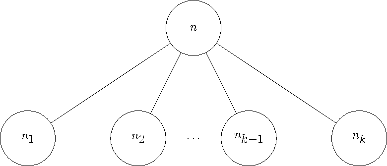

How MPSGE Works
Work in progress – This explanation is quick and dirty. A more fully featured explanation is in progress.
Constructing Equations
Consider a production block on sector $S$. This block will have an input tree and output tree. The generated equations are different for inputs vs outputs. However, they only differ up to a sign in certain locations. Let
\[\epsilon = \left\{\begin{array}{cl} -1 & \text{Tree is input} \\ 1 & \text{Tree is output} \end{array}\right.\]
represent this sign.
Compensated Demand
Consider a netput tree containing a single nest and $k$ children, either commodities or nests, as in the Figure below.

Each child node has a quantity $q_i$. Each commodity node has a reference price $p_i$, base quantity $Q_i$, reference quantity $q_i=p_i\cdot Q_i$, variable $C_i$, and taxes $t_{i,h}$, where the index $h$ is a consumer. Then $q = \sum q_i$ is the quantity of the root $n$. The root also has an elasticity $\sigma$.
The cost function for a commodity node $n_i$ will be given by $\pi(n,C_i)$ where
\[\pi(n,C_i) = \frac{C_i(1-\epsilon\sum_h t_{i,h})}{p_i}.\]
This must be indexed by both the parent nest and commodity as commodities can appear in a netput tree multiple times, albeit not directly under the same nest. The cost function for any non-commodity child node is defined recursively in this manner. This is well defined as all leaves are commodities.
The cost function on the root $n$, $C(n)$, depends on the elasticity of the root. If $\sigma=1$, the cost function is given by Cobb-Douglass
\[ C(n) = \prod_{i=1}^k \pi(n,C_i)^{\frac{q_i}{q}}.\]
And if $\sigma\ne1$ then we use a CES cost function
\[C(n) = \left(\sum_{i=1}^k \frac{q_i}{q} \pi(n,C_i)^{1+\epsilon\sigma}\right)^{\frac{1}{1+\epsilon\sigma}}.\]
In general, these trees can be highly nested. Consider a path from the root, $n_1$ to a leaf $n_{k+1}$. Using this we can calculate the compensated demand, $CD(S,C,n_k)$, for the sector $S$, commodity $C$ and nest $n_k$
\[CD(S,C,n_k) = -\epsilon Q_C \left(\frac{C(n_k)}{\pi(n_k,C)}\right)^{-\epsilon\sigma_k} \prod_{i=1}^{k-1} \left(\frac{C(n_i)}{C(n_{i+1})}\right)^{-\epsilon\sigma_{i}}.\]
Finally, the compensated demand, $CD(S,C)$, is the summation over all nests that have $C$ as a leaf.
\[CD(S,C) = \sum_{\substack{n\text{ nest}\\ \text{if }(n,C)\text{ is an edge}}} CD(S,C,n)\]
For convenience we take any compensated demand not defined above to be 0, this follows from the empty summation in $CD(S,C)$.
$\tau$
For sector $S$ and consumer $H$ define
\[\tau(S,H) = - \sum_{\substack{C\in\text{ Commodities}\\n\in\text{ nests}}} CD(S,C,n)\cdot t_{S,C,H,n}\cdot C\]
where $t_{S,C,H,n}$ is the tax on the commodity $C$ by consumer $H$ in sector $S$ under nest $n$.
Endowments/Demands
For commodity $C$ and consumer $H$ define $E(H,C)$ to be the endowment quantity. This is taken to be 0 if there is no endowment for $H$ and $C$.
Let $\sigma$ be the elasticity of demand, $q_C$ be the quantity of demand for commodity $C$ in $H$ consumer demand, $q = \sum_C q_C$ be the total demand, and $p_C$ be the reference price of the commodity. Define the demand function, $D(H,C)$, as
\[D(H,C) = \frac{q_C}{q}\cdot \frac{H}{C}\cdot \left\{\begin{array}{cc}\frac{p_H\cdot\text{expenditure}(H)}{C}^{\sigma-1} & \sigma\ne1 \\ 1 & \text{otherwise} \end{array}\right.\]
where
\[\text{expenditure}(H) = \left(\sum_{C\in\text{ demands}(H)} \frac{q_C\cdot C}{q\cdot p_C}\right)^{1/(1-\sigma)}\]
Constraints
With these definitions, we can define the complementarity constraints.
Zero Profit
Let $S$ be a sector with a production block, then the zero profit condition is given by,
\[\left(\sum_{C\in\text{ Commodities}}CD(S,C)\cdot C\right) - \sum_{H\in\text{ Consumers}} \tau(S,H) \perp S.\]
Market Clearance
Let $C$ be a commodity, then the market clearance condition is given by,
\[\left(\sum_{S\in\text{ Sectors}} CD(S,C)\cdot S \right) - \sum_{H\in\text{ Consumers}} E(H,C) - D(H,C) \perp C.\]
Income Balance
Let $H$ be a consumer, then the income balance condition is given by,
\[H - \left(\sum_{C\in\text{ Commodities}} E(H,C)\cdot C - \sum_{S\in\text{ Sectors}}\tau(S,H)\cdot S\right) \perp H\]